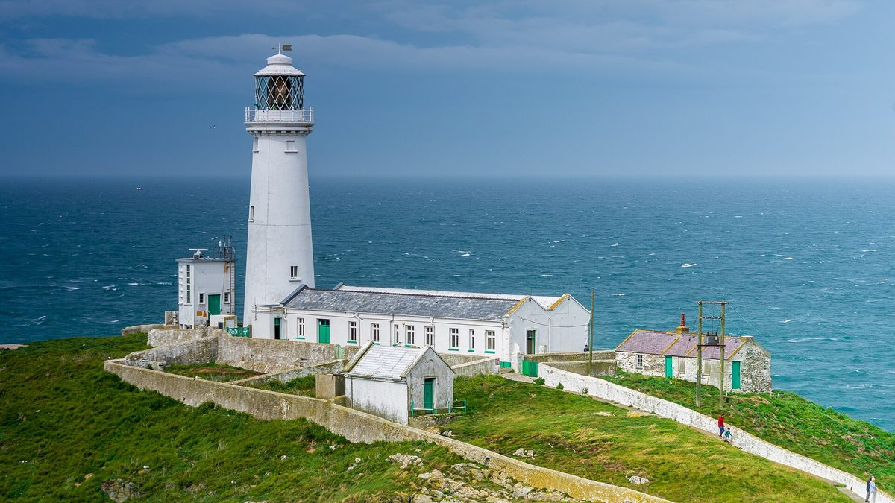

웨일스 앵글시 사회적기업의 조력발전 모를레, 2027년 첫 터빈 앞두고 정부 지원 지속 요청…최대 240MW 단계 개발

웨일스 에너지 장관 첫 현장 방문…사업자는 지역 업체·도제에게 이미 일감 생겼다며 꾸준한 지원 필요하다고 강조, 장관은 만든 가치를 지역사회에 더 많이 남길 수 있다고 평가
웨일스 앵글시(Ynys Môn) 앞바다에서 조력발전 사업 '모를레(Morlais)'를 운영하는 멘터 몬 모를레(Menter Môn Morlais)가 2027년 첫 터빈 설치를 앞두고 웨일스 정부에 지원을 계속해 달라고 요청했다. 요청은 웨일스 정부의 기업·연결·에너지 장관 애덤 프라이스(Adam Price)가 처음으로 사업 현장을 찾은 자리에서 나왔다. 모를레는 사회적기업 멘터 몬(Menter Môn)의 에너지 사업 가운데 하나로, 여러 단계로 나눠 개발하며 최대 발전 가능 용량은 240MW다. 사업자는 야생동물과 서식지를 보호하려고 규모를 천천히 늘려 가는 한편, 이미 지역 업체와 도제(견습생)에게 일감이 생기고 있고 개발이 진행될수록 일자리와 공급망 일감이 더 늘어날 것이라고 밝혔다. 존 이드리스 존스(John Idris Jones) 의장은 이런 이익을 실현하려면 꾸준한 지원이 필요하다며, 모를레가 공동체가 이끄는 사업으로서 청정에너지 수요에 답하면서 지역경제를 튼튼하게 하고 있다고 말했다. 프라이스 장관은 조력이 예측 가능한 전력을 주고 숙련 일자리와 웨일스 공급망을 키우며, 거기서 만들어진 가치를 지역사회에 더 많이 남길 수 있다고 평가했다.
시민에너지 관점
최대 240MW에 이르는 조력 단지를 대기업이 아니라 지역 사회적기업이 맡아 지역 업체와 도제에게 일감을 돌리고 있다는 점은, 바다라는 공유자원의 개발이익을 지역에 남기는 길이 있음을 보여 준다. 조력처럼 초기 비용이 큰 신기술을 지역 조직이 감당할 수 있겠느냐는 의문이 나올 수 있지만, 사업자가 정부에 꾸준한 지원을 요청하는 것도 바로 그 때문이며 공공이 초기 위험을 함께 지면 지역 조직도 큰 사업의 주인이 될 수 있다. 다만 이 사업에 주민이 얼마나 출자하는지는 알려지지 않았고, 주민이 지분을 갖고 의사결정에 참여할 때 비로소 지역에 남는 가치가 일감을 넘어 자산이 된다. 국내 해상풍력 같은 바다 공유자원 개발도 계획 단계부터 지역 공동체가 소유와 결정에 참여하는 몫을 제도로 정해 두어야 한다.
출처: 네이션 큄리(Nation.Cymru) 2026-10-23 Nation.Cymru staff 원문 보기
ウェールズ・アングルシーの社会的企業による潮流発電モーライス、2027年の初タービン設置を前に政府支援の継続を要請…最大240MWを段階的に開発
ウェールズのエネルギー担当相が初の現地視察…事業者は地元企業や見習いにすでに仕事が生まれているとして継続的な支援の必要性を強調、担当相は生み出した価値を地域社会により多く残せると評価
ウェールズ・アングルシー島（Ynys Môn）沖で潮流発電事業「モーライス（Morlais）」を運営するメンター・モーン・モーライス（Menter Môn Morlais）が、2027年の初タービン設置を前に、ウェールズ政府に支援の継続を求めた。要請は、ウェールズ政府の企業・接続・エネルギー担当相アダム・プライス（Adam Price）氏が初めて事業現場を訪れた際に出された。モーライスは社会的企業メンター・モーン（Menter Môn）のエネルギー事業の一つで、複数の段階に分けて開発され、最大発電可能容量は240MWとなる。事業者は野生生物や生息地を守るため規模を徐々に広げる一方、すでに地元企業や見習いに仕事が生まれており、開発が進むにつれて雇用やサプライチェーンの仕事がさらに増えるとしている。ジョン・イドリス・ジョーンズ（John Idris Jones）会長は、こうした利益を実現するには継続的な支援が必要だとし、モーライスは地域が主導する事業としてクリーンエネルギーの需要に応えながら地域経済を強くしていると述べた。プライス担当相は、潮流発電は予測可能な電力を供給し、熟練した雇用とウェールズのサプライチェーンを育て、生み出した価値を地域社会により多く残すことができると評価した。
市民エネルギーの視点
最大240MWに及ぶ潮流発電団地を大企業ではなく地域の社会的企業が担い、地元企業や見習いに仕事を回していることは、海という共有資源の開発利益を地域に残す道があることを示している。潮流発電のように初期費用の大きい新技術を地域の組織が担えるのかという疑問も出うるが、事業者が政府に継続的な支援を求めているのもまさにそのためであり、公的部門が初期のリスクを分かち合えば地域の組織も大きな事業の持ち主になれる。ただし、この事業に住民がどれだけ出資しているかは明らかでなく、住民が持ち分を持ち意思決定に加わってこそ、地域に残る価値が仕事にとどまらず資産になる。韓国の洋上風力のような海の共有資源の開発も、計画段階から地域共同体が所有と決定に参加する持ち分を制度として定めておくべきだ。
出典: ネイション・カムリ（Nation.Cymru） 2026-10-23 Nation.Cymru編集部 原文を読む
威尔士安格尔西社会企业的Morlais潮流能项目在2027年首台涡轮机安装前呼吁政府持续支持…最大240MW分阶段开发
威尔士能源大臣首次到访现场…运营方称当地企业和学徒已获得工作机会，强调需要持续支持；大臣认为可把创造的价值更多地留在当地社区
在威尔士安格尔西岛（Ynys Môn）近海运营潮流能发电项目“Morlais”的Menter Môn Morlais公司，在2027年首台涡轮机安装前，呼吁威尔士政府继续提供支持。这一呼吁是在威尔士政府企业、互联与能源大臣Adam Price首次到访项目现场时提出的。Morlais是社会企业Menter Môn旗下能源业务之一，分多个阶段开发，最大可能发电容量为240MW。运营方表示，为保护野生动物和栖息地将逐步扩大规模，同时当地企业和学徒已经获得了工作机会，随着开发推进，就业和供应链业务还会增加。Menter Môn Morlais主席John Idris Jones表示，要实现这些效益需要持续的支持，并称Morlais作为社区主导的项目，在回应清洁能源需求的同时也在增强地方经济。Price大臣评价说，潮流能可以提供可预测的电力，培育技术岗位和威尔士供应链，并把由此创造的价值更多地留在当地社区。
市民能源视角
规模最大可达240MW的潮流能园区不是由大企业而是由地方社会企业承担，并把工作机会分给当地企业和学徒，这说明海洋这一共有资源的开发收益是有办法留在当地的。有人可能质疑，地方组织能否承担潮流能这类初期成本高昂的新技术，而运营方向政府要求持续支持正是出于这个原因；只要公共部门分担初期风险，地方组织也能成为大型项目的主人。不过，居民在该项目中出资多少尚不清楚，只有居民持有股份并参与决策，留在当地的价值才能从工作机会变成资产。韩国海上风电等海洋共有资源的开发，也应从规划阶段起就以制度规定地方社区参与所有和决策的份额。
来源: 《Nation.Cymru》 2026-10-23 Nation.Cymru编辑部 查看原文
Anglesey social enterprise's Morlais tidal project seeks continued Welsh Government support ahead of first turbines in 2027, with up to 240MW to be developed in phases
Energy minister makes first site visit; developer says local firms and apprentices are already seeing work and stresses the need for sustained backing, while the minister says more of the value created can be kept in communities
Menter Môn Morlais, which runs the Morlais tidal energy project off Ynys Môn (Anglesey) in Wales, has asked the Welsh Government to keep backing the scheme as it prepares to install its first turbines in 2027. The request came during the first visit to the site by Adam Price, the Welsh Government's Cabinet Minister for Enterprise, Connectivity and Energy. Morlais is part of the energy portfolio of the social enterprise Menter Môn and is being developed in phases, with a potential maximum capacity of 240MW. The developer says it is expanding gradually to protect wildlife and habitats, and that local businesses and apprentices are already gaining work, with more jobs and supply-chain opportunities expected as development continues. Chair John Idris Jones said sustained support would be needed to realise those benefits, describing Morlais as a community-led project that meets the need for clean energy while strengthening the local economy. Price said tidal power can provide predictable electricity, build skilled jobs and Welsh supply chains, and keep more of the value it generates in local communities.
Citizen Energy View
That a tidal site of up to 240MW is being led not by a large corporation but by a local social enterprise, with work flowing to local firms and apprentices, shows there is a way to keep the gains from developing a shared resource like the sea in the area. Some may ask whether a local organisation can carry an expensive new technology like tidal power, but that is exactly why the developer is asking for continued government support, and when the public sector shares early risk, local organisations can own large projects too. How much residents have invested in this scheme is not known, and only when residents hold a stake and take part in decisions does the value kept locally become an asset rather than just work. In Korea, too, the development of shared marine resources such as offshore wind should set out in law, from the planning stage, a share for local communities in ownership and decision-making.
Source: Nation.Cymru 2026-10-23 Nation.Cymru staff Read the original